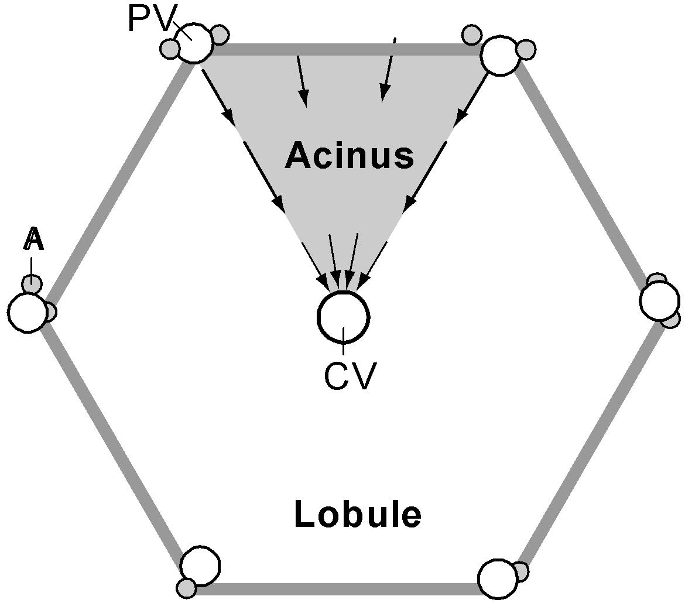
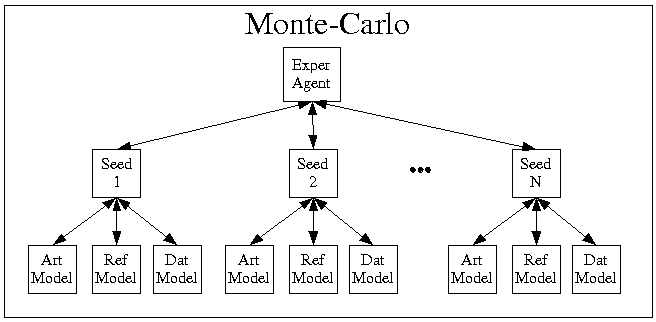
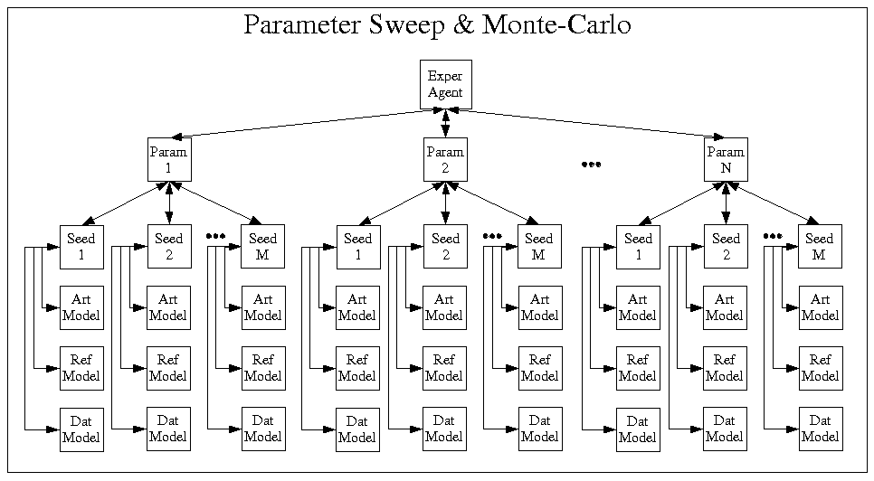

The ISL is the first functional unit representation being developed with FURM. We started developing both FURM and the ISL simultaneously because no method is ever useful without having some examples of its product.
We chose the liver as our functional unit for this first representation for a couple of reasons. It is relatively homogenous (various parts of the liver look and act the same). There is a large amount of data of different types to validate against. And there are relatively stable pedigreed models of liver function out there.
A snapshot of the source code, parameters, input, and experimental results can be found here.
A more complete description of this model suite can be found in the Initial Technical Report for FURM on the Documents page. But, we'll describe it briefly here.
Liver Structure
A liver is built of several lobes, each made up of hundreds of lobules. Each lobule consists of several acini organized around terminal afferent vessels. An acinus is a network of sinusoids that separate meshes of one-cell thick plates made up of hepatocytes. Intra-acinar hepatocytes exhibit location-specific properties. |
 |
The In Silico Experimental Apparatus |
The ISL models were set up to mimic specific wet lab experiments where a rat liver is perfused with a fluid containing various solutes. Some of these solutes are extracted by the hepatocytes and some of which are not. The initial experiments implemented in the ISL are with a non-extracted solute (Sucrose). |
|
The model suite consists of three in silico models:
- DatModel -- A wrapper for data taken from the wet lab experiments.
- RefModel -- A two-compartment model developed by Michael Roberts and his colleagues at the University of Queensland, Queensland Australia.
- ArtModel -- Our agent-based model.
|
|
An experiment agent (ExperAgent) executes all three of these models in tandem. The ExperAgent is responsible for:
- managing the resources (inputs, memory, etc.) required for each experiment,
- controlling the models,
- taking data from the models,
- progressing from one experimental setup to the next,
- scoring each model against some performance measure, and
- acquiring telemetric data from the experiments.
This set of requirements allows for a wide array of experiments. Experiments are treated as discovery mechanisms, not validation exercises. In that context, one might want to explore the behavior of the 3 different models in response to variations of input. An hypothesis might be that the reference model is more stable than the articulated model. An experiment would then be designed to execute the three models using varying inputs (changes in the bolus times or delivery profiles). A set of measurement devices would be hooked up to the ExperAgent that measured the various observables believed to indicate stability. A scoring device would be hooked up to the ExperAgent to measure the stability of each model based on those measurements. In order to vary the inputs, the ExperAgent will need an input device and some characterization of that device indicating its tolerances, limits, and "normal" usage as well as some heuristics as to how to employ the device. The ExperAgent can then vary the inputs according to some regular pattern (quantities and flow rates that start at an initial point and progress by a constant interval). Or it could use some search algorithm to target instability indicators evidenced by the stability measures.
Another potential experiment might be intended to discover how a structural change in one or more of the models might affect their behavior given the same inputs. In this case, the ExperAgent would insert/remove/change the structural component in automated ways and measure their output.
Techniques like parameter sweeps, sensitivity analysis, and adaptive simulation are all subcategories of these types of experiments and are effected through the ExperAgent.
The following figures indicate the structure of the apparatus in different experiments.
|
|  |
|
|  |
|
These requirements also encourage optimization for the reusability of the models and the ancillary modules being used to carry out the experiments.
For example, because measurements have to be taken many times and applied to many different models and then subsequently compared, efficiency dictates that the module implementing the measurement be independent of both the subject (the ExperAgent) and the object (the model or other component being measured) of the measurement. This isolates the code that implements the measurement and encourages that all measures are implemented with the same or similar interfaces, as well.
|
ISL Objectives
The ISL has two primary objectives:
- Demonstrate the efficacy and feasibility of FURM as a method for developing functional unit models, and
- Provide a platform by which Agent-Based Modeling (ABM) can be used to augment the other modeling techniques being used to study the liver.
For details about the elements of the ISL and how they satisfy these two objectives, see the project Documents
|
|